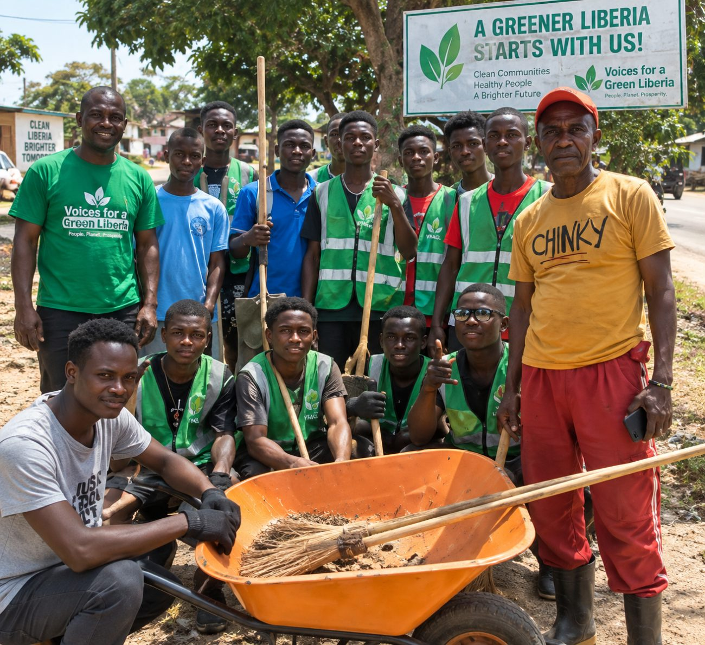

Keeping the green in our future.
Open a conversation about the forests, waterways, and natural spaces around us.
Educating, engaging, and empowering communities for a greener Liberia through environmental journalism, public education, and practical community action.

For the land we love.
For the generations to come.
Start with an issue you care about. These introductory guides offer ideas for learning, sharing, and taking action.
Open a conversation about the forests, waterways, and natural spaces around us.

Turn care for your surroundings into a conversation with your community.

Ask better questions about the energy choices that shape everyday life.
Illustrative environmental photography; not photographs of VGL activities.
Voices for a Green Liberia (VGL) Media Inc. is an environmental media and advocacy organization that uses journalism, broadcasting, digital communication, public education, and community engagement to promote environmental protection and sustainable development in Liberia.
Environmental protection requires informed citizens, responsible businesses, empowered communities, young people, civil society organizations, and strong institutional partnerships.
Download our organization profile ↓To educate, engage, and empower Liberians through credible environmental journalism, public education, advocacy, community outreach, and practical environmental action.
To become Liberia’s leading environmental media and public-engagement platform, inspiring citizens and institutions to protect the environment and build sustainable, healthy, and resilient communities.
Six connected areas bring environmental issues into public conversation and encourage responsible action.
Stories highlighting environmental challenges, community concerns, government interventions, private-sector initiatives, and practical solutions.
Environmental discussions, interviews, awareness campaigns, expert conversations, and public education through broadcast platforms.
Short videos, graphics, educational messages, interviews, documentaries, and campaigns for social media and digital platforms.
Environmental awareness, sanitation, cleanup activities, waste reduction, and citizen participation.
Engaging young people as environmental advocates, volunteers, communicators, and community leaders.
Media and public campaigns that bring attention to environmental challenges and encourage citizens and institutions to act.
A dedicated environmental radio program designed to bring environmental issues into public conversation.
Environmental experts, government institutions, community leaders, youth and environmental activists, businesses, civil society organizations, and members of the public.
Our model combines media awareness with physical community action so issues can be discussed, understood, acted upon, and documented.
We seek to complement, amplify, and extend the work of environmental institutions through media, storytelling, public education, and community mobilization.
VGL welcomes collaboration with government agencies, environmental institutions, local authorities, development partners, UN agencies, businesses, financial institutions, civil society, schools, universities, community and youth organizations, environmental experts, and local communities.
Discuss a partnership ↗Explore selected video posts from our Facebook page, from environmental discussions to everyday action.
A discussion framed around waste responsibility and flooding in Monrovia.
Watch on Facebook ↗A VGL awareness message encouraging reusable bags and responsible waste disposal.
Watch on Facebook ↗A message addressing street pollution from household and business waste.
Watch on Facebook ↗Videos open on Facebook. Playback depends on Facebook availability and may require you to log in.
Prefer YouTube? Visit the VGL Media channel.
Explore YouTube ↗Prepare a story idea, an expression of interest, or a partnership introduction to share with VGL Media.
Prepare an introduction below, then open it in your email app or copy it to share. You can also contact our team directly. Nothing is submitted automatically.
For story ideas, program enquiries, volunteering, and partnerships, contact our Founder and Executive Director.
Voices for a Green Liberia (VGL) Media Inc.
Email Rufus ↗Every thoughtful conversation is a place to begin.
Stay connected.
Keep the conversation growing.
Find Voices for a Green Liberia on Facebook and YouTube. Follow our page and visit our channel.
Join us on Facebook.
Visit our Facebook page to see posts and join the conversation.
Follow on Facebook ↗Watch VGL Media.
Explore our YouTube channel and subscribe on YouTube to stay connected.
Visit our YouTube channel ↗